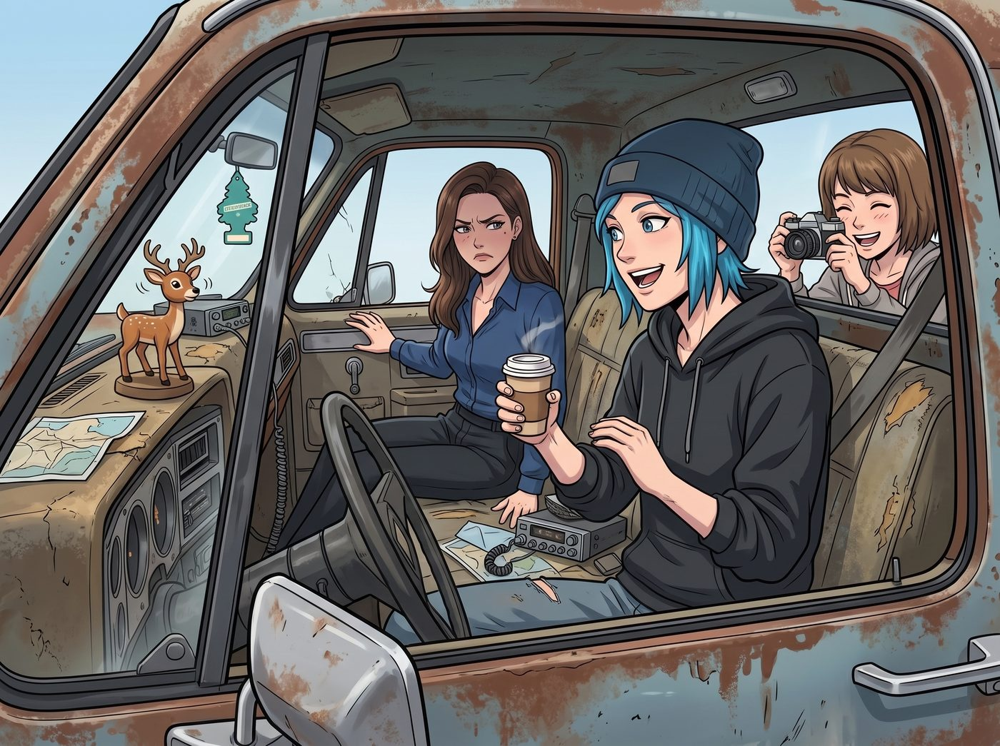

兜風驚魂

一、被半拉半拽的名媛
Chloe 為了炫耀改裝成果,一把抽走 Victoria 手裡那杯還冒著熱氣的濃縮咖啡,不由分說地半拉半拽,把這位名媛塞進了皮卡的副駕駛座。
Max 熟門熟路地鑽進後排,握好相機,一臉「這場面必須記錄下來」的期待。
二、感官維度的極致折磨
Victoria 剛坐定,就皺起了眉頭——沒有加熱座椅,沒有柏林之聲音響,只有一張洗得發硬的破布座椅,一扇漏風的三角窗,還有儀表台上那隻不知道多少年歷史、隨著引擎震動搖頭晃腦的塑膠鹿玩偶。
車廂裡混雜著高級賽車機油、廉價薄荷菸草和舊皮墊的氣味,一股腦地灌進她的鼻腔。
「這味道,」她嫌棄地皺了皺鼻子,「是什麼調配出來的災難?」
「這叫底層的煙火氣,」Chloe 一邊發動引擎一邊回嘴,「習慣就好。」
三、彈射起步
Chloe 猛踩離合掛擋,改裝後的 V8 發動機瞬間爆發出一聲震耳欲聾的咆哮,整輛車以近乎彈射般的推背感,猛地衝出莊園大門,沿著沿海公路狂飆而去。
第一個急轉彎襲來時,強大的慣性讓 Victoria 那件名牌大衣緊緊貼上車門,狂暴的海風瞬間灌進漏風的三角窗,把她精心打理的金髮吹得凌亂不堪。
四、崩潰尖叫
Victoria 雙手死死抓住頭頂那個快要散架的拉手,徹底失去了一切社交禮儀,對著駕駛座失聲尖叫。
「Price!」她的聲音破音,「踩剎車!妳這個瘋子!我們要衝下懸崖了!」
情急之下,她猛地轉頭望向後排,聲音裡帶著毫不矜持的求救:「Max!救命!讓她停車!我不想這樣死掉!」
Chloe 戴著墨鏡,單手打著方向盤,在暴風般的引擎轟鳴聲中放聲狂笑,反手把音響音量擰到最大,破喇叭裡瞬間炸開一陣吵鬧的車庫搖滾。
坐在後排的 Max,一手死死抓緊座椅扶手,一手還不忘舉起相機,對著前排那兩張截然不同的表情——一個狂喜大笑,一個驚恐崩潰、頭髮亂飛、嘴巴張成誇張的O形——連續按下好幾次快門,精準捕捉到了 Victoria 這輩子最狼狽的瞬間。
五、懸崖觀景台
皮卡最終平穩地停在能俯瞰阿卡迪亞海灣的懸崖觀景台上。
Victoria 扶著車門搖搖晃晃地下車,雙腿發軟,胸口劇烈起伏,好半晌才找回自己的呼吸節奏。
海風吹拂著三人的頭髮,遠處是漸漸沉入海平線的金色夕陽。Victoria 深吸了一口帶著鹹味的冷空氣,一邊手忙腳亂地整理著被吹得亂七八糟的長髮,一邊咬牙切齒地從牙縫裡擠出一句話。
「這是我這輩子坐過,」她喘著氣,語氣裡混雜著劫後餘生的憤怒和一絲說不清道不明的興奮,「最粗魯、最野蠻、最底層的一輛破車……」
她頓了頓,深吸一口氣,像是在跟自己內心某種頑固的驕傲做鬥爭,才終於憋出後半句。
「但化油器調校得,」她咬牙切齒,「確實挑不出毛病。」
六、鏡頭裡的三人
Chloe 靠在車門邊,聽到這句遲來的、彆扭至極的認可,忍不住咧嘴大笑:「這才對嘛,蔡斯。」
Max 悄悄坐到車斗邊緣,舉起相機,將這三個曾經在校園裡針鋒相對的女孩——此刻並排站在懸崖邊,任由海風吹拂著各自凌亂頭髮的背影——輕輕按下快門,永久定格進了膠片之中。
「下次,」Victoria 一邊整理儀容,一邊語氣仍舊帶著幾分不情願,卻難掩一絲期待,「妳要是還打算開這輛瘋子車出來兜風,提前通知我一聲——我會做好心理準備,順便,」她瞥了眼那頂被風吹到腳邊的墨鏡,「換一件不那麼容易被風吹壞的大衣。」
「所以說,」Chloe 挑眉,笑得意味深長,「還想再坐一次?」
Victoria 別開臉,語氣裡帶著死鴨子嘴硬的矜持:「純粹是為了確認妳的改裝技術是不是曇花一現。」
Max 這時湊過來,把相機螢幕轉過去,得意地展示著剛才抓拍到的成品——畫面裡的 Victoria,頭髮亂成一團,嘴巴張成誇張的O形,一副魂飛魄散的驚嚇模樣。
「要不要看看妳剛才的『高光時刻』?」Max 笑著問。
Victoria 瞥了一眼那張照片,臉色瞬間垮下來,語氣裡帶著毫不掩飾的嫌棄。
「刪掉,」她伸手就要搶過相機,「馬上刪掉,這張照片絕對不准存在這個世界上。」
「好好好,」Max 假裝順從地點頭,卻在按下刪除鍵前,飛快地把那張照片存進了手機備份——這個小動作,被一旁的 Chloe 看了個正著,兩人交換了一個心照不宣的眼神。
Victoria 盯著相機螢幕上顯示「已刪除」的字樣,滿意地哼了一聲,轉身重新整理起被吹亂的頭髮,渾然不知那張照片,早已悄悄躺進了 Max 手機裡一個標註著「精彩瞬間」的隱藏相簿。
夕陽的餘暉灑滿整片懸崖,三人的笑聲混著海浪聲,一起消散在阿卡迪亞灣漸暗的暮色裡。